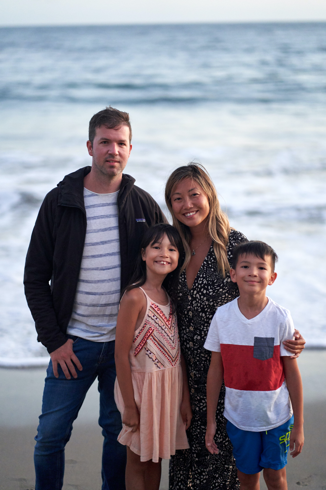

Target Audience:
Residents living in the areas surrounding Preston, Fish Haven, and Soda Springs in Southeast Idaho. Specifically, those looking for updates of weather in the surrounding area of Southeast Idaho. Although this information could apply to all, the information will be relevant to those making plans for outdoor activies and events, so the targeted age group will be ages 20 to 60.
Personas:
Robert (age 35) and Nancy (age 33) Gilliam just moved from San Fransisco, CA, with their two kids Jack and Emily to Soda Springs, Idaho. Robert, is still employed as a software developer with his same company in California, and will be working from home. Nancy was employed as a teacher, but is wanting to be a stay at home mom for the time being. The whole family loves being outdoors, but they especially miss being close to the beach, so they are most eager to see what Bear Lake has to offer.

Jared Strong (age 23) is a registered nurse who grew up and is currently working at the hospital in Preston, Idaho. Jared is currently single, and when he's not working, loves to be outside. In the summer and autumn months, Jared likes to hike and bike the trails surrounding the Paris and Sherman Peaks. In the winter months, Jared frequently visits Cherry Peak Resort to ski.
Scenarios:
- -How much cloud cover will there be Friday afternoon at Bear Lake?
- -Will I need to shovel my driveway tomorrow morning?
- -Will there be fog for my morning commute?
- -How warm will it be this weekend?
- -What's the high for today?